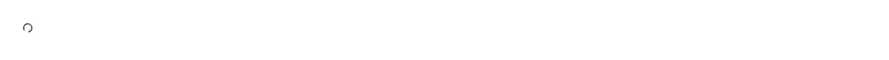

An inline loading indicator that announces itself: a spinning lucide Loader2 inside a role="status" live region with a screen-reader-only label, so a pending operation is heard as well as seen. Reach for it while fetching data, submitting a form, loading a page or a section, as a Suspense or lazy-route fallback, beside a disabled control, inside a table cell or panel that is still filling in, or anywhere you would otherwise drop a bare "Loading…" string. Common asks it answers: "loading spinner", "react spinner component", "loader component", "busy indicator", "activity indicator", "throbber", "accessible loading state", "aria-live loading announcement", "screen reader loading", "Suspense fallback spinner", "spinning Loader2", "animate-spin loader". The usual hand-rolled version — a bare Loader2 with animate-spin dropped straight into the markup — is invisible to assistive technology: the icon is decorative, so nothing is announced and a screen-reader user waits in silence. Official shadcn/ui now ships a spinner of its own, so choose deliberately rather than by search rank: theirs is the Loader2 icon itself carrying role="status" and the hard-coded English string aria-label="Loading", which is announced but cannot be changed without overriding the attribute, and its registry entry adds class-variance-authority to your package.json. Here the icon is aria-hidden and the announcement comes from a real sr-only text node in a wrapping live region, "Loading" by default; set label to say what is actually loading ("Loading invoices") so the same component announces something useful on every screen, and so the string sits where a translation pipeline can find it rather than inside an aria attribute. Take theirs if you want the icon element itself and nothing around it; take this one if the announcement has to say more than "Loading". It is 1rem square and inherits the current text colour, so it sits correctly inside a button, a link, or a line of muted text with no extra styling, and every span prop (id, style, className, data-*) passes straight through to the wrapper. Pick the sibling that matches the shape: loading-button for a button whose own label swaps to a busy state, progress-ring or gauge when the percentage is known — this is the indeterminate "something is happening" case. Styled with shadcn tokens for light and dark themes; lucide-react is the only dependency.

Rendered on the shadcn default neutral palette with harness-generated props.
pnpm dlx shadcn@4.21.0 add @pulld/spinner
| licence | POINTER |
|---|---|
| primitive base | none |
| type | registry:ui |
| files | src/components/ui/spinner.tsx |
| npm deps pulled | none beyond the pre-installed peer set |
| registry deps | — |
| semantic / palette / hex | 0 / 0 / 0 |
| writes shared ui/ | yes — can overwrite the project’s own primitives |